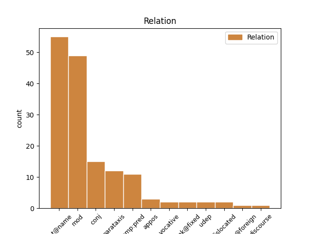
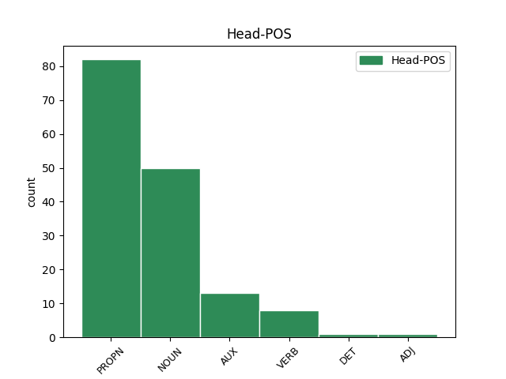
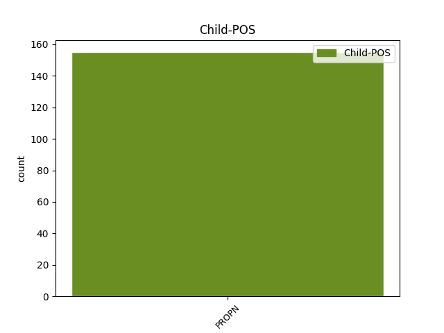

Distribution of features within this leaf



Agreement Rules sorted by frequency.
- When the dependent token is the flat multiword expression(flat@name) of the head token, and the head token is PROPN and the dependent token is PROPN.
1 eee _ _ _ _ 0 _ _ _
2 hrvaški _ _ _ _ 0 _ _ _
3 predsednik _ _ _ _ 0 _ _ _
4 stipe Stipe PROPN Npmsn Case=Nom|Gender=Masc|Number=Sing 0 _ _ _
5 mesič Mesič PROPN Npmsn Case=Nom|Gender=Masc|Number=Sing 4 flat@name _ msd=Slmei|word=Mesič
6 je _ _ _ _ 0 _ _ _
7 rekel _ _ _ _ 0 _ _ _
8 da _ _ _ _ 0 _ _ _
9 so _ _ _ _ 0 _ _ _
10 med _ _ _ _ 0 _ _ _
11 drugo _ _ _ _ 0 _ _ _
12 svetovno _ _ _ _ 0 _ _ _
13 vojno _ _ _ _ 0 _ _ _
14 istro _ _ _ _ 0 _ _ _
15 vse _ _ _ _ 0 _ _ _
16 do _ _ _ _ 0 _ _ _
17 trsta _ _ _ _ 0 _ _ _
18 osvojili _ _ _ _ 0 _ _ _
19 hrvaški _ _ _ _ 0 _ _ _
20 partizani _ _ _ _ 0 _ _ _
21 in _ _ _ _ 0 _ _ _
22 da _ _ _ _ 0 _ _ _
23 bi _ _ _ _ 0 _ _ _
24 morala _ _ _ _ 0 _ _ _
25 biti _ _ _ _ 0 _ _ _
26 slovenija _ _ _ _ 0 _ _ _
27 hvaležna _ _ _ _ 0 _ _ _
28 saj _ _ _ _ 0 _ _ _
29 bi _ _ _ _ 0 _ _ _
30 sicer _ _ _ _ 0 _ _ _
31 gledala _ _ _ _ 0 _ _ _
32 na _ _ _ _ 0 _ _ _
33 morje _ _ _ _ 0 _ _ _
34 z _ _ _ _ 0 _ _ _
35 oddaljenosti _ _ _ _ 0 _ _ _
36 dvajsetih _ _ _ _ 0 _ _ _
37 kilometrov _ _ _ _ 0 _ _ _
1 ja _ _ _ _ 0 _ _ _
2 … _ _ _ _ 0 _ _ _
3 jaz _ _ _ _ 0 _ _ _
4 sem _ _ _ _ 0 _ _ _
5 pa _ _ _ _ 0 _ _ _
6 tu _ _ _ _ 0 _ _ _
7 v _ _ _ _ 0 _ _ _
8 vznožju vznožje NOUN Ncnsl Case=Loc|Gender=Neut|Number=Sing 0 _ _ _
9 pohorja Pohorje PROPN Npnsg Case=Gen|Gender=Neut|Number=Sing 8 mod _ msd=Slser|word=Poharja
10 zelenega _ _ _ _ 0 _ _ _
11 pohorja _ _ _ _ 0 _ _ _
12 [gap] _ _ _ _ 0 _ _ _
1 tu _ _ _ _ 0 _ _ _
2 david David PROPN Npmsn Case=Nom|Gender=Masc|Number=Sing 0 _ _ _
3 healy _ _ _ _ 0 _ _ _
4 in _ _ _ _ 0 _ _ _
5 nigel Nigel PROPN Npmsn Case=Nom|Gender=Masc|Number=Sing 2 conj _ msd=Slmei|word=Najdžl
6 worthington _ _ _ _ 0 _ _ _
7 menedžer _ _ _ _ 0 _ _ _
8 oziroma _ _ _ _ 0 _ _ _
9 selektor _ _ _ _ 0 _ _ _
10 reprezentance _ _ _ _ 0 _ _ _
1 ampak _ _ _ _ 0 _ _ _
2 eee _ _ _ _ 0 _ _ _
3 skratka _ _ _ _ 0 _ _ _
4 si biti AUX Va-r2s-n Mood=Ind|Number=Sing|Person=2|Polarity=Pos|Tense=Pres|VerbForm=Fin 0 _ _ _
5 pravi _ _ _ _ 0 _ _ _
6 kleni _ _ _ _ 0 _ _ _
7 pohorec Pohorec PROPN Npmsn Case=Nom|Gender=Masc|Number=Sing 4 comp:pred _ msd=Slmei|word=Pohorc
8 kako _ _ _ _ 0 _ _ _
9 se _ _ _ _ 0 _ _ _
10 pa _ _ _ _ 0 _ _ _
11 štekate _ _ _ _ 0 _ _ _
12 z _ _ _ _ 0 _ _ _
13 onimi _ _ _ _ 0 _ _ _
14 savinjčani _ _ _ _ 0 _ _ _
15 ? _ _ _ _ 0 _ _ _
1 eee _ _ _ _ 0 _ _ _
2 andrej Andrej PROPN Npmsn Case=Nom|Gender=Masc|Number=Sing 0 _ _ _
3 blatnik _ _ _ _ 0 _ _ _
4 maja _ _ _ _ 0 _ _ _
5 novak _ _ _ _ 0 _ _ _
6 berta _ _ _ _ 0 _ _ _
7 bojetu _ _ _ _ 0 _ _ _
8 alojz _ _ _ _ 0 _ _ _
9 ihan _ _ _ _ 0 _ _ _
10 aleš _ _ _ _ 0 _ _ _
11 debeljak _ _ _ _ 0 _ _ _
12 franjo _ _ _ _ 0 _ _ _
13 frančič _ _ _ _ 0 _ _ _
14 [gap] _ _ _ _ 0 _ _ _
15 igor _ _ _ _ 0 _ _ _
16 zabel _ _ _ _ 0 _ _ _
17 igor Igor PROPN Npmsn Case=Nom|Gender=Masc|Number=Sing 2 parataxis _ msd=Slmei|word=Igor
18 bratož _ _ _ _ 0 _ _ _
1 poljaki _ _ _ _ 0 _ _ _
2 bodo _ _ _ _ 0 _ _ _
3 naslednjo _ _ _ _ 0 _ _ _
4 tekmo _ _ _ _ 0 _ _ _
5 igrali _ _ _ _ 0 _ _ _
6 s _ _ _ _ 0 _ _ _
7 san San PROPN Npmsn Case=Nom|Gender=Masc|Number=Sing 0 _ _ _
8 marinom Marino PROPN Npmsi Case=Ins|Gender=Masc|Number=Sing 7 mod _ msd=Slmeo|word=Marinom
1 jezus Jezus PROPN Npmsn Case=Nom|Gender=Masc|Number=Sing 0 _ _ _
2 marija Marija PROPN Npfsn Case=Nom|Gender=Fem|Number=Sing 1 unk@fixed _ msd=Slzei|word=jozusmarija[split_2-2]
3 … _ _ _ _ 0 _ _ _
4 ja _ _ _ _ 0 _ _ _
5 saj _ _ _ _ 0 _ _ _
6 tako _ _ _ _ 0 _ _ _
7 je _ _ _ _ 0 _ _ _
8 če _ _ _ _ 0 _ _ _
9 se _ _ _ _ 0 _ _ _
10 ti _ _ _ _ 0 _ _ _
11 prikaže _ _ _ _ 0 _ _ _
12 grčija _ _ _ _ 0 _ _ _
1 tudi _ _ _ _ 0 _ _ _
2 drugi _ _ _ _ 0 _ _ _
3 napadalec napadalec NOUN Ncmsn Case=Nom|Gender=Masc|Number=Sing 0 _ _ _
4 izjemni _ _ _ _ 0 _ _ _
5 david David PROPN Npmsn Case=Nom|Gender=Masc|Number=Sing 3 appos _ msd=Slmei|word=Dejvid
6 healy _ _ _ _ 0 _ _ _
7 je _ _ _ _ 0 _ _ _
8 imel _ _ _ _ 0 _ _ _
9 priložnost _ _ _ _ 0 _ _ _
10 da _ _ _ _ 0 _ _ _
11 premaga _ _ _ _ 0 _ _ _
12 arturja _ _ _ _ 0 _ _ _
13 boruca _ _ _ _ 0 _ _ _
14 toda _ _ _ _ 0 _ _ _
15 tudi _ _ _ _ 0 _ _ _
16 njemu _ _ _ _ 0 _ _ _
17 to _ _ _ _ 0 _ _ _
18 ni _ _ _ _ 0 _ _ _
19 uspelo _ _ _ _ 0 _ _ _
1 varnost _ _ _ _ 0 _ _ _
2 je _ _ _ _ 0 _ _ _
3 na _ _ _ _ 0 _ _ _
4 prvem _ _ _ _ 0 _ _ _
5 mestu _ _ _ _ 0 _ _ _
6 slovenca Slovenec PROPN Npmsg Case=Gen|Gender=Masc|Number=Sing 9 comp:pred _ msd=Slmer|word=Slovenca
7 se _ _ _ _ 0 _ _ _
8 prijetno _ _ _ _ 0 _ _ _
9 čutiš čutiti VERB Vmpr2s Aspect=Imp|Mood=Ind|Number=Sing|Person=2|Tense=Pres|VerbForm=Fin 0 _ _ _
10 že _ _ _ _ 0 _ _ _
11 na _ _ _ _ 0 _ _ _
12 slavniku _ _ _ _ 0 _ _ _
1 jezus Jezus PROPN Npmsn Case=Nom|Gender=Masc|Number=Sing 7 discourse _ msd=Slmei|word=jozusmarija[split_1-2]
2 marija _ _ _ _ 0 _ _ _
3 … _ _ _ _ 0 _ _ _
4 ja _ _ _ _ 0 _ _ _
5 saj _ _ _ _ 0 _ _ _
6 tako _ _ _ _ 0 _ _ _
7 je biti VERB Va-r3s-n Mood=Ind|Number=Sing|Person=3|Polarity=Pos|Tense=Pres|VerbForm=Fin 0 _ _ _
8 če _ _ _ _ 0 _ _ _
9 se _ _ _ _ 0 _ _ _
10 ti _ _ _ _ 0 _ _ _
11 prikaže _ _ _ _ 0 _ _ _
12 grčija _ _ _ _ 0 _ _ _
1 janez Janez PROPN Npmsn Case=Nom|Gender=Masc|Number=Sing 4 dislocated _ msd=Slmei|word=Janez
2 janša _ _ _ _ 0 _ _ _
3 to _ _ _ _ 0 _ _ _
4 je biti VERB Va-r3s-n Mood=Ind|Number=Sing|Person=3|Polarity=Pos|Tense=Pres|VerbForm=Fin 0 _ _ _
5 čisto _ _ _ _ 0 _ _ _
6 to _ _ _ _ 0 _ _ _
7 je _ _ _ _ 0 _ _ _
8 čisto _ _ _ _ 0 _ _ _
1 eee _ _ _ _ 0 _ _ _
2 televizijska _ _ _ _ 0 _ _ _
3 postaja postaja NOUN Ncfsn Case=Nom|Gender=Fem|Number=Sing 0 _ _ _
4 hezbolah _ _ _ _ 0 _ _ _
5 ki _ _ _ _ 0 _ _ _
6 obširno _ _ _ _ 0 _ _ _
7 o _ _ _ _ 0 _ _ _
8 tem _ _ _ _ 0 _ _ _
9 poroča _ _ _ _ 0 _ _ _
10 al Al PROPN Npmsn Case=Nom|Gender=Masc|Number=Sing 3 conj _ msd=Slmei|word=Al
11 džazira _ _ _ _ 0 _ _ _
12 torej _ _ _ _ 0 _ _ _
13 arabski _ _ _ _ 0 _ _ _
14 mediji _ _ _ _ 0 _ _ _
15 so _ _ _ _ 0 _ _ _
16 zelo _ _ _ _ 0 _ _ _
17 dejavni _ _ _ _ 0 _ _ _
18 jih _ _ _ _ 0 _ _ _
19 spremljamo _ _ _ _ 0 _ _ _
20 in _ _ _ _ 0 _ _ _
21 tako _ _ _ _ 0 _ _ _
22 dobivamo _ _ _ _ 0 _ _ _
23 tudi _ _ _ _ 0 _ _ _
24 informacije _ _ _ _ 0 _ _ _
25 z _ _ _ _ 0 _ _ _
26 druge _ _ _ _ 0 _ _ _
27 strani _ _ _ _ 0 _ _ _
28 čeprav _ _ _ _ 0 _ _ _
29 ne _ _ _ _ 0 _ _ _
30 s _ _ _ _ 0 _ _ _
31 prve _ _ _ _ 0 _ _ _
32 roke _ _ _ _ 0 _ _ _
1 [audience:laughter] _ _ _ _ 0 _ _ _
2 pa _ _ _ _ 0 _ _ _
3 še _ _ _ _ 0 _ _ _
4 kucler kucler PROPN Npfsn Case=Nom|Gender=Fem|Number=Sing 5 mod _ msd=Slzei|word=Kucler
5 dolinarjeva Dolinarjev ADJ Aspfsn Case=Nom|Degree=Pos|Gender=Fem|Number=Sing|Poss=Yes|PronType=Prs 0 _ _ _
1 eee _ _ _ _ 0 _ _ _
2 pet _ _ _ _ 0 _ _ _
3 nič nič DET Pz-nsa Case=Acc|Gender=Neut|Number=Sing|PronType=Neg 0 _ _ _
4 gornja _ _ _ _ 0 _ _ _
5 radgona Radgona PROPN Npfsn Case=Nom|Gender=Fem|Number=Sing 3 conj _ msd=Slzei|word=Radgona
1 aha _ _ _ _ 0 _ _ _
2 uf _ _ _ _ 0 _ _ _
3 saj _ _ _ _ 0 _ _ _
4 to _ _ _ _ 0 _ _ _
5 je _ _ _ _ 0 _ _ _
6 pa _ _ _ _ 0 _ _ _
7 ta _ _ _ _ 0 _ _ _
8 je biti AUX Va-r3s-n Mood=Ind|Number=Sing|Person=3|Polarity=Pos|Tense=Pres|VerbForm=Fin 0 _ _ _
9 pa _ _ _ _ 0 _ _ _
10 stara _ _ _ _ 0 _ _ _
11 univerza _ _ _ _ 0 _ _ _
12 edvarda Edvard PROPN Npmsg Case=Gen|Gender=Masc|Number=Sing 8 udep _ msd=Slmer|word=Edvarda
13 kardelja _ _ _ _ 0 _ _ _
14 v _ _ _ _ 0 _ _ _
15 ljubljani _ _ _ _ 0 _ _ _
16 … _ _ _ _ 0 _ _ _
17 ja _ _ _ _ 0 _ _ _
18 ja _ _ _ _ 0 _ _ _
19 ja _ _ _ _ 0 _ _ _
20 … _ _ _ _ 0 _ _ _
21 statistke _ _ _ _ 0 _ _ _
22 zdajle _ _ _ _ 0 _ _ _
23 nimajo _ _ _ _ 0 _ _ _
24 še _ _ _ _ 0 _ _ _
1 kdo _ _ _ _ 0 _ _ _
2 je biti AUX Va-r3s-n Mood=Ind|Number=Sing|Person=3|Polarity=Pos|Tense=Pres|VerbForm=Fin 0 _ _ _
3 pevec _ _ _ _ 0 _ _ _
4 green _ _ _ _ 0 _ _ _
5 green _ _ _ _ 0 _ _ _
6 grass _ _ _ _ 0 _ _ _
7 of _ _ _ _ 0 _ _ _
8 home _ _ _ _ 0 _ _ _
9 tom Tom PROPN Npmsn Case=Nom|Gender=Masc|Number=Sing 2 parataxis _ msd=Slmei|word=Tom
10 jones _ _ _ _ 0 _ _ _
11 quincy _ _ _ _ 0 _ _ _
12 jones _ _ _ _ 0 _ _ _
13 tom _ _ _ _ 0 _ _ _
14 petty _ _ _ _ 0 _ _ _
1 in _ _ _ _ 0 _ _ _
2 sicer _ _ _ _ 0 _ _ _
3 tom Tom PROPN Npmsn Case=Nom|Gender=Masc|Number=Sing 10 dislocated _ msd=Slmei|word=Tom
4 jones _ _ _ _ 0 _ _ _
5 quincy _ _ _ _ 0 _ _ _
6 jones _ _ _ _ 0 _ _ _
7 tom _ _ _ _ 0 _ _ _
8 petty _ _ _ _ 0 _ _ _
9 kdo _ _ _ _ 0 _ _ _
10 je biti AUX Va-r3s-n Mood=Ind|Number=Sing|Person=3|Polarity=Pos|Tense=Pres|VerbForm=Fin 0 _ _ _
11 pevec _ _ _ _ 0 _ _ _
12 green _ _ _ _ 0 _ _ _
13 green _ _ _ _ 0 _ _ _
14 grass _ _ _ _ 0 _ _ _
15 of _ _ _ _ 0 _ _ _
16 home _ _ _ _ 0 _ _ _
17 ? _ _ _ _ 0 _ _ _
1 no _ _ _ _ 0 _ _ _
2 in _ _ _ _ 0 _ _ _
3 jaz _ _ _ _ 0 _ _ _
4 jezus Jezus PROPN Npmsn Case=Nom|Gender=Masc|Number=Sing 8 vocative _ msd=Slmei|word=Jezus
5 zdajle _ _ _ _ 0 _ _ _
6 se _ _ _ _ 0 _ _ _
7 pa _ _ _ _ 0 _ _ _
8 spomnim spomniti VERB Vmer1s Aspect=Perf|Mood=Ind|Number=Sing|Person=1|Tense=Pres|VerbForm=Fin 0 _ _ _
9 porkaš _ _ _ _ 0 _ _ _
10 sem _ _ _ _ 0 _ _ _
11 rekla _ _ _ _ 0 _ _ _
12 jaz _ _ _ _ 0 _ _ _
13 sem _ _ _ _ 0 _ _ _
14 pa _ _ _ _ 0 _ _ _
15 z _ _ _ _ 0 _ _ _
16 vami _ _ _ _ 0 _ _ _
17 zmenjena _ _ _ _ 0 _ _ _
1 veš vedeti VERB Vmpr2s Aspect=Imp|Mood=Ind|Number=Sing|Person=2|Tense=Pres|VerbForm=Fin 0 _ _ _
2 kadar _ _ _ _ 0 _ _ _
3 sem _ _ _ _ 0 _ _ _
4 prišel _ _ _ _ 0 _ _ _
5 v _ _ _ _ 0 _ _ _
6 maribor _ _ _ _ 0 _ _ _
7 ne _ _ _ _ 0 _ _ _
8 je _ _ _ _ 0 _ _ _
9 zdaj _ _ _ _ 0 _ _ _
10 pa _ _ _ _ 0 _ _ _
11 macdonald's McDonald's PROPN Npmsn Case=Nom|Gender=Masc|Number=Sing 1 parataxis _ msd=Slmei|word=Mekdonalds
12 tu _ _ _ _ 0 _ _ _
13 ne _ _ _ _ 0 _ _ _
14 je _ _ _ _ 0 _ _ _
15 zdaj _ _ _ _ 0 _ _ _
16 pa _ _ _ _ 0 _ _ _
17 bom _ _ _ _ 0 _ _ _
18 jaz _ _ _ _ 0 _ _ _
19 tu _ _ _ _ 0 _ _ _
20 non _ _ _ _ 0 _ _ _
21 stop _ _ _ _ 0 _ _ _
22 ne _ _ _ _ 0 _ _ _
23 ja _ _ _ _ 0 _ _ _
24 ja _ _ _ _ 0 _ _ _
25 prvi _ _ _ _ 0 _ _ _
26 prvi _ _ _ _ 0 _ _ _
27 dan _ _ _ _ 0 _ _ _
28 sem _ _ _ _ 0 _ _ _
29 že _ _ _ _ 0 _ _ _
30 šel _ _ _ _ 0 _ _ _
31 ne _ _ _ _ 0 _ _ _
32 pa _ _ _ _ 0 _ _ _
33 te _ _ _ _ 0 _ _ _
34 naslednji _ _ _ _ 0 _ _ _
35 teden _ _ _ _ 0 _ _ _
36 teden _ _ _ _ 0 _ _ _
37 sem _ _ _ _ 0 _ _ _
38 tudi _ _ _ _ 0 _ _ _
39 šel _ _ _ _ 0 _ _ _
40 pa _ _ _ _ 0 _ _ _
41 za _ _ _ _ 0 _ _ _
42 mesec _ _ _ _ 0 _ _ _
43 dni _ _ _ _ 0 _ _ _
44 sem _ _ _ _ 0 _ _ _
45 tudi _ _ _ _ 0 _ _ _
46 hodil _ _ _ _ 0 _ _ _
47 pa _ _ _ _ 0 _ _ _
48 non _ _ _ _ 0 _ _ _
49 stop _ _ _ _ 0 _ _ _
50 sem _ _ _ _ 0 _ _ _
51 hodil _ _ _ _ 0 _ _ _
52 zdaj _ _ _ _ 0 _ _ _
53 pa _ _ _ _ 0 _ _ _
54 niti _ _ _ _ 0 _ _ _
55 ne _ _ _ _ 0 _ _ _
56 povoham _ _ _ _ 0 _ _ _
57 ga _ _ _ _ 0 _ _ _
58 dokler _ _ _ _ 0 _ _ _
59 grem _ _ _ _ 0 _ _ _
60 mimo _ _ _ _ 0 _ _ _
61 ker _ _ _ _ 0 _ _ _
62 mi _ _ _ _ 0 _ _ _
63 je _ _ _ _ 0 _ _ _
64 totalno _ _ _ _ 0 _ _ _
65 out _ _ _ _ 0 _ _ _
66 no _ _ _ _ 0 _ _ _
67 eh _ _ _ _ 0 _ _ _
68 hodi _ _ _ _ 0 _ _ _
69 v _ _ _ _ 0 _ _ _
70 pizdo _ _ _ _ 0 _ _ _
71 [gap] _ _ _ _ 0 _ _ _
1 aaa _ _ _ _ 0 _ _ _
2 spreminja _ _ _ _ 0 _ _ _
3 pa _ _ _ _ 0 _ _ _
4 se _ _ _ _ 0 _ _ _
5 vsebina _ _ _ _ 0 _ _ _
6 operacije _ _ _ _ 0 _ _ _
7 nato Nato PROPN Npmsn Case=Nom|Gender=Masc|Number=Sing 0 _ _ _
8 training _ _ _ _ 0 _ _ _
9 mission _ _ _ _ 0 _ _ _
10 in _ _ _ _ 0 _ _ _
11 irak Irak PROPN Npmsn Case=Nom|Gender=Masc|Number=Sing 7 flat@foreign _ msd=Slmei|word=Irak
1 tu _ _ _ _ 0 _ _ _
2 zdaj _ _ _ _ 0 _ _ _
3 priložnost priložnost NOUN Ncfsn Case=Nom|Gender=Fem|Number=Sing 0 _ _ _
4 ponovno _ _ _ _ 0 _ _ _
5 to _ _ _ _ 0 _ _ _
6 je _ _ _ _ 0 _ _ _
7 david _ _ _ _ 0 _ _ _
8 healy _ _ _ _ 0 _ _ _
9 healy Healy PROPN Npmsn Case=Nom|Gender=Masc|Number=Sing 3 parataxis _ msd=Slmei|word=Hili
1 če _ _ _ _ 0 _ _ _
2 je _ _ _ _ 0 _ _ _
3 jurija Jurij PROPN Npmsg Case=Gen|Gender=Masc|Number=Sing 4 udep _ msd=Slmer|word=Jurja
4 dež dež NOUN Ncmsn Case=Nom|Gender=Masc|Number=Sing 0 _ _ _
5 in _ _ _ _ 0 _ _ _
6 na _ _ _ _ 0 _ _ _
7 petra _ _ _ _ 0 _ _ _
8 suša _ _ _ _ 0 _ _ _
9 se _ _ _ _ 0 _ _ _
10 raduje _ _ _ _ 0 _ _ _
11 kmetova _ _ _ _ 0 _ _ _
12 duša _ _ _ _ 0 _ _ _
13 to _ _ _ _ 0 _ _ _
14 je _ _ _ _ 0 _ _ _
15 ona _ _ _ _ 0 _ _ _
16 rekla _ _ _ _ 0 _ _ _
1 ja _ _ _ _ 0 _ _ _
2 … _ _ _ _ 0 _ _ _
3 jaz _ _ _ _ 0 _ _ _
4 sem _ _ _ _ 0 _ _ _
5 pa _ _ _ _ 0 _ _ _
6 tu _ _ _ _ 0 _ _ _
7 v _ _ _ _ 0 _ _ _
8 vznožju _ _ _ _ 0 _ _ _
9 pohorja Pohorje PROPN Npnsg Case=Gen|Gender=Neut|Number=Sing 0 _ _ _
10 zelenega _ _ _ _ 0 _ _ _
11 pohorja Pohorje PROPN Npnsg Case=Gen|Gender=Neut|Number=Sing 9 appos _ msd=Slser|word=Poharja
12 [gap] _ _ _ _ 0 _ _ _
Disagree Examples:
1 eee _ _ _ _ 0 _ _ _
2 sodelujejo _ _ _ _ 0 _ _ _
3 posebne _ _ _ _ 0 _ _ _
4 enote _ _ _ _ 0 _ _ _
5 zračne _ _ _ _ 0 _ _ _
6 sile _ _ _ _ 0 _ _ _
7 eee _ _ _ _ 0 _ _ _
8 ob _ _ _ _ 0 _ _ _
9 pomoči _ _ _ _ 0 _ _ _
10 mornarice _ _ _ _ 0 _ _ _
11 kot _ _ _ _ 0 _ _ _
12 smo _ _ _ _ 0 _ _ _
13 slišali _ _ _ _ 0 _ _ _
14 in _ _ _ _ 0 _ _ _
15 pa _ _ _ _ 0 _ _ _
16 seveda _ _ _ _ 0 _ _ _
17 tudi _ _ _ _ 0 _ _ _
18 pripadniki pripadnik NOUN Ncmpn Case=Nom|Gender=Masc|Number=Plur 0 _ _ _
19 izraelske _ _ _ _ 0 _ _ _
20 obveščevalne _ _ _ _ 0 _ _ _
21 službe _ _ _ _ 0 _ _ _
22 šin Šin PROPN Npmsn Case=Nom|Gender=Masc|Number=Sing 18 mod _ msd=Slmei|word=Šin
23 bet _ _ _ _ 0 _ _ _
1 za _ _ _ _ 0 _ _ _
2 nastanitev _ _ _ _ 0 _ _ _
3 v _ _ _ _ 0 _ _ _
4 študentskih _ _ _ _ 0 _ _ _
5 … _ _ _ _ 0 _ _ _
6 tako _ _ _ _ 0 _ _ _
7 in _ _ _ _ 0 _ _ _
8 da _ _ _ _ 0 _ _ _
9 se _ _ _ _ 0 _ _ _
10 ji _ _ _ _ 0 _ _ _
11 pove _ _ _ _ 0 _ _ _
12 da _ _ _ _ 0 _ _ _
13 [name:personal] _ _ _ _ 0 _ _ _
14 [name:surname] _ _ _ _ 0 _ _ _
15 je _ _ _ _ 0 _ _ _
16 eee _ _ _ _ 0 _ _ _
17 v _ _ _ _ 0 _ _ _
18 bistvu _ _ _ _ 0 _ _ _
19 samo _ _ _ _ 0 _ _ _
20 za _ _ _ _ 0 _ _ _
21 erasmus Erasmus PROPN Npmsn Case=Nom|Gender=Masc|Number=Sing 22 mod _ msd=Slmei|word=erazmus
22 študente študent NOUN Ncmpa Case=Acc|Gender=Masc|Number=Plur 0 _ _ _
23 ona _ _ _ _ 0 _ _ _
24 nima _ _ _ _ 0 _ _ _
25 z _ _ _ _ 0 _ _ _
26 njihovo _ _ _ _ 0 _ _ _
27 tržno _ _ _ _ 0 _ _ _
28 eee _ _ _ _ 0 _ _ _
29 oddajo _ _ _ _ 0 _ _ _
30 nič _ _ _ _ 0 _ _ _
31 ne _ _ _ _ 0 _ _ _
32 … _ _ _ _ 0 _ _ _
33 [name:personal] _ _ _ _ 0 _ _ _
34 [name:surname] _ _ _ _ 0 _ _ _
35 ja _ _ _ _ 0 _ _ _
1 v _ _ _ _ 0 _ _ _
2 filmu _ _ _ _ 0 _ _ _
3 za _ _ _ _ 0 _ _ _
4 eno _ _ _ _ 0 _ _ _
5 od _ _ _ _ 0 _ _ _
6 metod _ _ _ _ 0 _ _ _
7 mučenja _ _ _ _ 0 _ _ _
8 uporabljajo _ _ _ _ 0 _ _ _
9 priznane _ _ _ _ 0 _ _ _
10 hite hit NOUN Ncmpa Case=Acc|Gender=Masc|Number=Plur 0 _ _ _
11 damjana Damjan PROPN Npmsg Case=Gen|Gender=Masc|Number=Sing 10 mod _ msd=Slmer|word=Damjana
12 murka _ _ _ _ 0 _ _ _
13 da _ _ _ _ 0 _ _ _
14 ali _ _ _ _ 0 _ _ _
15 ne _ _ _ _ 0 _ _ _
16 ? _ _ _ _ 0 _ _ _
1 kar _ _ _ _ 0 _ _ _
2 dober _ _ _ _ 0 _ _ _
3 spodnji _ _ _ _ 0 _ _ _
4 del _ _ _ _ 0 _ _ _
5 je biti AUX Va-r3s-n Mood=Ind|Number=Sing|Person=3|Polarity=Pos|Tense=Pres|VerbForm=Fin 0 _ _ _
6 odpeljala _ _ _ _ 0 _ _ _
7 putzerjeva _ _ _ _ 0 _ _ _
8 vendar _ _ _ _ 0 _ _ _
9 na _ _ _ _ 0 _ _ _
10 koncu _ _ _ _ 0 _ _ _
11 vendarle _ _ _ _ 0 _ _ _
12 tri _ _ _ _ 0 _ _ _
13 stotinke _ _ _ _ 0 _ _ _
14 zaostanka _ _ _ _ 0 _ _ _
15 obe _ _ _ _ 0 _ _ _
16 italijanki Italijanka PROPN Npfdn Case=Nom|Gender=Fem|Number=Dual 5 parataxis _ msd=Slzdi|word=Italijanki
17 na _ _ _ _ 0 _ _ _
18 koncu _ _ _ _ 0 _ _ _
19 zelo _ _ _ _ 0 _ _ _
20 zelo _ _ _ _ 0 _ _ _
21 blizu _ _ _ _ 0 _ _ _
1 bruno Bruno PROPN Npmsn Case=Nom|Gender=Masc|Number=Sing 5 vocative _ msd=Slmei|word=Bruno
2 na _ _ _ _ 0 _ _ _
3 svidenje _ _ _ _ 0 _ _ _
4 lahko _ _ _ _ 0 _ _ _
5 greste iti VERB Vmbr2p Mood=Ind|Number=Plur|Person=2|Tense=Pres|VerbForm=Fin 0 _ _ _
6 ja _ _ _ _ 0 _ _ _
7 … _ _ _ _ 0 _ _ _
8 ja _ _ _ _ 0 _ _ _
9 ja _ _ _ _ 0 _ _ _
10 [all:laughter] _ _ _ _ 0 _ _ _